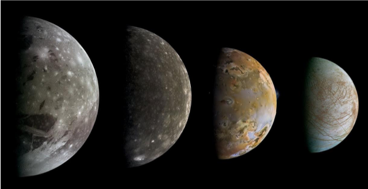

 Естественият спътник е небесно тяло, което е в орбита на дадена планета. Често срещано наименование на естествените спътници е „луна“ (без главна буква). Има множество теории за произхода на естествените спътници, като според най-разпространената версия те се формират от същия сгъстяващ се газово-прахов облак на протопланетарния диск, от който се формира главната планета. Въпреки това обаче има множество изключения, за които е известно или се предполага, че не са се сформирали по този начин. За някои спътници се смята, че са астероиди, уловени от гравитацията на планетата, че са раздробени части на по-голям спътник вследствие от сблъсък с друг обект, или че са откъснати части от главната планета вследствие на сблъсък с космическо тяло. Повечето от спътниците имат еднакъв период на околоосно въртене и на въртене около планетата, затова те са винаги обърнати с една и съща страна към планетата. Изключение е Хиперион, който се върти хаотично поради множество външни влияния, както и външните сателити на газовите гиганти, които са прекалено далече от планетата, за да изпитат достатъчно силно гравитационно въздействие. Естествените спътници нямат свои спътници, тъй като поради еднаквия период на околоосно и околопланетно въртене, такава система би била нестабилна. Въпреки това, няколко спътника имат малки придружаващи ги обекти, намиращи се в точките на Лагранж (например Тетида и Диона – спътници на Сатурн. Скорошното откриване на спътника Дактил, обикалящ около 243 Ида, потвърждава, че някои астероиди също имат спътници. Астероидът 87 Силвия има два спътника. Вижте спътници на астероиди за повече информация. В Слънчевата система има около 140 естествени спътника в орбита около деветте планети. Предполага се наличие на много повече, които се намират в орбита около планети от други слънчеви системи. Газовите гиганти имат обширна система от спътници, някои от тях с размери, сравними с тези на Земята. Меркурий и Венера нямат спътници, Земята има един (Луната), Марс има два, а Плутон има три, един от които – Харон – е с големи размери и понякога Плутон и Харон биват разглеждани като двойна планета.